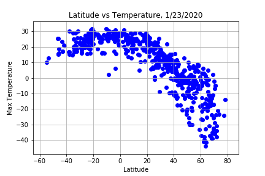

This is my API Challange homework. Open in Jupyter Notbook or Jupyter Lab
The purposed of this project was to determine and visualize the weather phenmenon in various cities around the world.
Then we determined ideal vacation sports and looked up hotels!
Here is a chart that was produced: LatvsWeather
